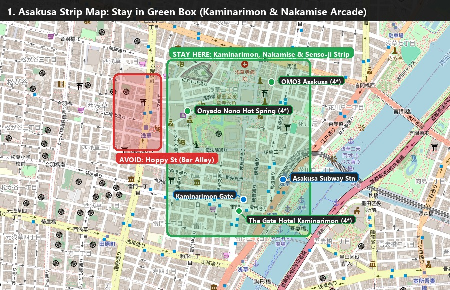
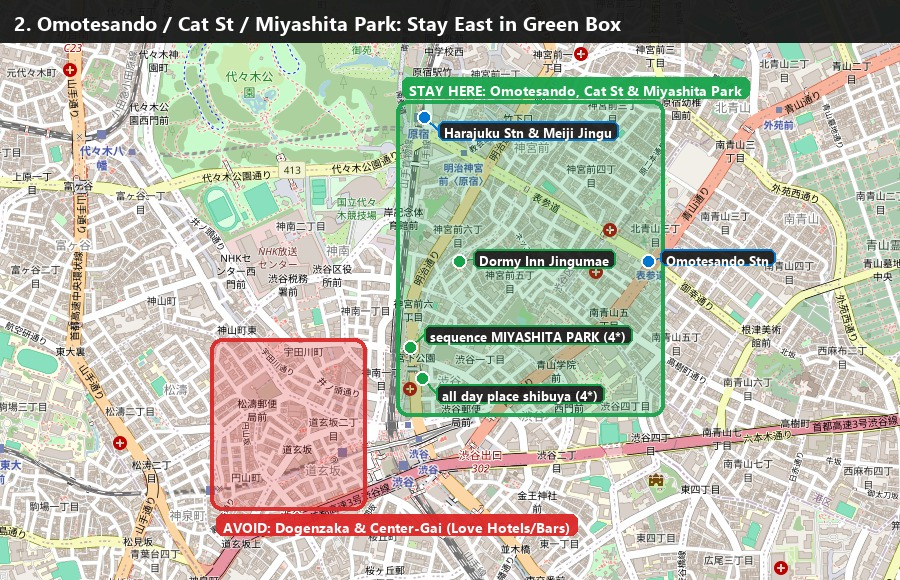
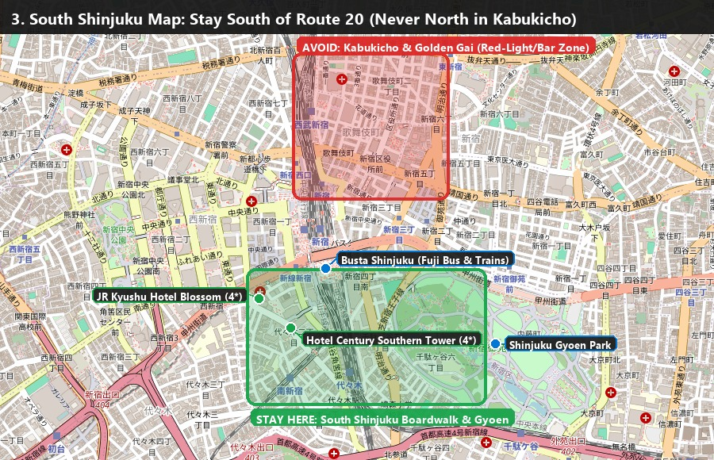
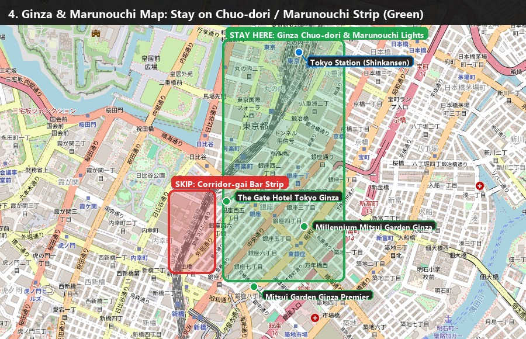

Before You Go: Bookings, Prep & Dining Card
Check off each item as you go—your progress is saved automatically in your browser on this device.
0 / 12 completed
1949 Geneva IDP Required for Karts
SHIBUYA SKY Opens 14 Days Ahead
🪪 Show This Card at Any Restaurant or Food Stall (Strictly No Pork & No Alcohol)
豚肉・ベーコン・ハム・ラード・豚骨スープ、およびアルコール（お酒・みりん）は一切食べられません。鶏肉・牛肉・魚介類・野菜の料理をお願いします。
English meaning: "We cannot consume any pork, bacon, ham, lard, pork-bone broth (tonkotsu), or alcohol. Chicken, beef, seafood, and vegetable dishes are great."
🏨 Deep-Validated Tokyo Base Comparison, Search Filters & Zone Maps (Nov 25 – Dec 2)
Tap any map below to zoom full-screen on your phone! Each map highlights the 🟢 GREEN ZONE (Where to Stay: Walkable, Family-Friendly Tourist Strip), the 🔴 RED ZONE (Where NOT to Book: Bar/Club/Love-Hotel Alleys), and the exact pinned locations of our vetted 4-star hotels & subway stations:

🗺️ 1. Asakusa Map (Tap to Zoom)

🗺️ 2. Omotesando / Cat St Map (Tap to Zoom)

🗺️ 3. South Shinjuku Map (Tap to Zoom)

🗺️ 4. Ginza & Marunouchi Map (Tap to Zoom)
| Tourist Strip & Vibe | What to Search / Check Off (Priceline, Expedia, Booking, Airbnb) |
Avg 4-Star Cost / Night (Nov 25 – Dec 2) |
Vetted 4-Star Hotels (Pinned on Map) | Walk to Subway & Time to Shinjuku | Green Zone vs. Red Zone Rules |
|---|---|---|---|---|---|
| 1. Asakusa Strip (Kaminarimon & Nakamise Arcade) Vibe: Gatlinburg + Old San Juan |
• Priceline Box: ☑️ Taito - Bunkyo Zone (78)• Expedia / Booking.com: Search Asakusa or Senso-ji Temple• Airbnb Search: Asakusa 1-chome or Kaminarimon, Taito-ku
|
$150 – $260 / night (Weeknights ~$130–$225; Sat spikes higher) 💰 Best Value (~35% cheaper) |
• The Gate Hotel Kaminarimon (4★ right across from Kaminarimon lantern) • Onyado Nono Hot Spring (4★ tatami + natural onsen by Senso-ji) • OMO3 Asakusa by Hoshino (4★ 1 min from Senso-ji) |
2–4 min walk to Asakusa Station. 25 mins by subway to Shinjuku (only needed Thu, Fri & Mon mornings). |
🟢 Stay Here: Between Kaminarimon Gate, Nakamise Arcade & Asakusa Station. 🔴 Avoid: Hoppy Street (1-block drinking alley west of temple) & Senzoku (far north). |
| 2. Omotesando / Cat Street / Miyashita Park (Harajuku–Omotesando Strip) Vibe: Waikiki Strip + Seminyak |
• Priceline Boxes: ☑️ Shibuya - Meguro (19) + ☑️ Shibuya-ku (1)• Expedia / Booking.com: Search Omotesando, Harajuku, or Miyashita Park• Airbnb Search: Jingumae, Shibuya-ku or Minami-Aoyama
|
$200 – $330 / night (Weeknights ~$180–$310; Sat spikes higher) ⚖️ Best All-Around Balance |
• sequence MIYASHITA PARK (4★ directly on top of Miyashita Rooftop Park & Cat St) • all day place shibuya (4★ right at the entrance to Cat Street / Omotesando) • Dormy Inn Premium Jingumae (Quiet street between Harajuku & Cat St) |
2–4 min walk to station. 4 mins (2 stops) or $8 Uber to Shinjuku! Sat & Tue Night Karts are walkable. |
🟢 Stay Here: East of the train tracks along Miyashita Park, Cat Street (Jingumae) & Omotesando. 🔴 Avoid: Never cross west of Shibuya Station into Dogenzaka ("Love Hotel Hill") or Center-Gai. |
| 3. South Shinjuku Boardwalk ONLY (Southern Terrace & Gyoen Side) Vibe: Miracle Mile + Park |
• Priceline Box: ☑️ Shinjuku-ku - Ikebukuro (51) (ignore Ikebukuro/Kabukicho results)• Expedia / Booking.com: Search Shinjuku Southern Terrace or Shinjuku Gyoen• Airbnb Search: Yoyogi 2-chome or Sendagaya 5-chome
|
$240 – $360 / night 🚄 #1 Transit Convenience |
• Hotel Century Southern Tower (4★ directly on Southern Terrace boardwalk) • JR Kyushu Hotel Blossom (4★ 3-min walk from South Exit) |
2-min walk to Busta Shinjuku (Fuji bus), Hakone train, Mt. Takao train & Airport Limousine Bus! | 🟢 Stay Here: South of Route 20 (Koshu-Kaido) right by Southern Terrace & Shinjuku Gyoen. 🔴 Avoid: Never book north of the station in Kabukicho or Golden Gai (red-light/bar zone). |
| 4. Ginza / Marunouchi Strip (Chuo-dori & Brick Promenade) Vibe: Upscale Waikiki + 5th Ave |
• Priceline Boxes: ☑️ Ginza Shopping District (74) + ☑️ Chiyoda - Chuo - Zhongli (47)• Expedia / Booking.com: Search Ginza or Marunouchi Tokyo Station• Airbnb Search: Ginza, Chuo-ku
|
$260 – $420 / night (Weeknights from ~$220 at 4★; 4.5–5★ ~$320–$420) 💎 Most Upscale / Priciest |
• Millennium Mitsui Garden Ginza (4.5★ right on Ginza 4-chome strip) • The Gate Hotel Tokyo (Ginza) (4.5★ open-air terrace on strip) • Mitsui Garden Ginza Premier (4★ skyline views at south end of Chuo-dori) |
1–3 min walk to Ginza Station. 14 mins on 1 direct subway (no transfers) to Shinjuku; Tue Bullet Train lands right here. |
🟢 Stay Here: Along Chuo-dori (Ginza 1–7 chome) or Marunouchi Nakadori. 🔴 Avoid: Skip Ginza Corridor-gai (late-night singles bar strip right under the west train tracks). |
📅 Master Booking Schedule (What to Book, Date & Exact Time)
Every reservation matched to your final jet-lag-optimized itinerary, ordered by when booking opens:
| Item to Book | Date | Exact Time | When to Book & Direct Link |
|---|---|---|---|
| 1. Shinjuku Base Hotel | Wed Nov 25 – Wed Dec 2 | 7 Nights | Book Today · Keep across Mon Nov 30 so big bags stay in Tokyo (Shinjuku Map) |
| 2. Hakone Wooden Ryokan | Mon Nov 30 – Tue Dec 1 | Check-in 16:00 | Book Today · Private open-air onsen + request no-pork wagyu/seafood dinner (Hakone Ryokans) |
| 3. Matcha Tea Ceremony Class | Sat Nov 28 | 12:30 – 13:30 | Book Today · Harajuku / Omotesando / Shibuya area (Viator Tea Classes) |
| 4. Sushi-Making Class (Lunch) | Sun Nov 29 | 11:30 – 13:00 | Book Today · Asakusa (Viator Sushi Class) |
| 5. Golden-Hour Kimono Rental | Sun Nov 29 | 15:00 | Book Today · Asakusa near Senso-ji (Maikoya Kimono) |
| 6. Live Sumo Show + Chicken Hot-Pot | Sun Nov 29 | 18:30 – 20:15 | Book Today · Evening dinner show (Viator Sumo Show) |
| 7. Samurai & Ninja Museum | Tue Dec 1 | 13:45 – 14:45 | Book Today · Moved from Sun to Tue! (Viator Samurai Museum) |
| 8. Night Street Go-Karts (Shibuya) | Tue Dec 1 | 17:00 (16:30 check-in) | ✅ Already Booked! Keep Tue Dec 1 booking (57331P11) + get AAA 1949 IDPs |
| 9. Shinjuku ↔ Fuji-Q / Kawaguchiko Bus | Fri Nov 27 | 08:15 Out / 16:30 Return | Opens Oct 27 (30 days out) · Busta Shinjuku ↔ Kawaguchiko/Fuji-Q (highway-buses.jp) |
| 10. Fuji-Q Priority Passes (Zokkon & Takabisha) | Fri Nov 27 | 13:00 – 15:30 Window | Opens 30 Days Out · Gate entry is free; buy coaster fast-passes (fujiq.jp/en) |
| 11. Odakyu Romancecar + Hakone Freepass | Mon Nov 30 | 10:00 AM | Opens Oct 30 · Shinjuku → Hakone-Yumoto (odakyu.jp) |
| 12. Shinkansen Bullet Train | Tue Dec 1 | ~11:30 AM (33 min) | Opens Nov 1 · Odawara → Tokyo Station (smart-ex.jp) |
| 13. SHIBUYA SKY Sunset Ticket | Sat Nov 28 | 15:30 – 16:00 Entry | Opens Fri Nov 13 (9:00 AM CST) · 14 days ahead (SHIBUYA SKY) |